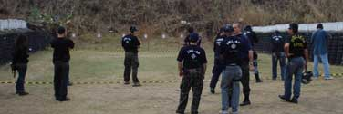

Dia 29, sábado passado, correu o Campeonato de Tiro em comemoração ao dia do Policial Civil no ano de 2007. O evento foi realizado no estande de tiros da Academia de Polícia, no bairro do Caju, que foi preparado e teve até a grama (matagal na verdade) aparado.
Queremos deixar consignado o reconhecimento pelo profissionalismo e dedicação do grupo de colegas da ACADEPOL que organizou o evento e que, a despeito da total falta de estrutura e abandono pelo Governo, conseguiram fazer com que o Torneio fosse um sucesso, e todos os policiais que lá estiveram com suas famílias ficaram satisfeitos e até surpresos pela qualidade da estrutura montada.
Também os elogios aos candidatos ao cargo de Investigador, classificados no último concurso, que já concluíram o curso de formação da ACADEPOL e aguardam apenas sua nomeação, que não saiu ainda por questões, infelizmente, políticas. Eles, que ainda se encontram na condição de alunos da Academia fizeram a diferença para o sucesso do campeonato.
Confirmei também que de fato o CAT (Curso de Ações Táticas) vai comprometer toda a estrutura da ACADEPOL, e durante este período não haverá treinamento de tiro para os policiais civis. Aliás, parece que a quantidade de munição que foi separada para o CAT é enorme, e cada aluno deste curso dará mais de 2 mil tiros, quantidade espantosa, já que nem em cursos pagos se alcança esta marca. Sim, um contra-senso à falta de munição para os policiais, tanto para o serviço quanto para treinamento. Lembre-se, cada policial civil recebe por ano 25 munições para pistola.

Mas voltando ao assunto, chegamos no estande de tiros já na metade da competição (né Chao), então não tive tempo de fazer muitas imagens pois eu mesmo estava competindo, e não dá para atirar, fotografar e filmar ao mesmo tempo. Ainda assim restam algumas imagens, que com certeza não dão a dimensão do evento, mas servem pra quem não foi ter uma idéia.Eu tinha dito que iria passar a maior vergonha, mas até que não fui tão mal. Não fosse a prova da sub-metralhadora eu diria que fui bem. Se o alvo fosse um marginal, e eu tivesse que abate-lo usando a sub com certeza ele iria correr muito... ileso ;) A classificação das equipes deve sair no meio da semana, os primeiros lugares ganharão medalhas.Vejam então as regras, e assistam ao vídeo com breves momentos da competição.
PISTA 01 – ESPINGARDA WINCHESTER 12 GA : O competidor iniciará a pista com a arma carregada com 04(quatro) cartuchos, mais 01(um) cartucho junto ao corpo, câmara vazia, dedo fora do guarda-mato e arma direcionada a 45º em relação ao solo. Ao sinal sonoro efetuará disparos, podendo efetuar a recarga no momento que preferir, em 04(quatro) alvos metálicos (pepper popper), que deverão cair, a distância de 12 a 15m, cada alvo valerá 1 ponto e o tempo servirá como critério de desempate
PISTA 02 - FUZIL M-16 A-2 COMMANDO : O competidor iniciará a pista com a arma carregada (carregador inserido municiado com 15 cartuchos), alimentada, alavanca de registro de tiro em safe, e terá 1(um) minuto para efetuar os disparos, posição livre, estando o alvo (adaptado de NRA) a uma distância de 20(vinte) metros. Cada disparo efetuado após o término do tempo acarretará na perda de um ponto de maior valor que o atirador tenha obtido.
PISTA 03 - SUBMETRALHADORA WALTHER 9 mm : O competidor iniciará a pista com a arma carregada (carregador inserido e municiado com 15 cartuchos), ferrolho fechado, alavanca de registro de tiro em “E” (opção de disparos intermitentes), dedo fora do “guarda-mato”, posição livre, terá 1(um) minuto para efetuar os disparos, estando o alvo (adaptado de NRA) a uma distância de 20m(vinte metros). Cada disparo efetuado após o término do tempo acarretará na perda de um ponto de maior valor que o atirador tenha obtido.
PISTA 04 – PISTOLA NRA : O competidor iniciará a pista com a arma carregada alimentada, com 10(dez) cartuchos, cão rebatido, dedo fora do guarda-mato, direcionada a 45º em relação ao solo, a 10(dez) metros de distância do alvo (adaptado de NRA), ao sinal sonoro efetuará os 10 primeiros disparos em pé, ao final destes, estando a pistola “fria” e com o ferrolho aberto, ajoelhará, recarregará (carregador reserva junto ao corpo), efetuará mais 10 disparos de joelho, no tempo máximo de 01(um) minuto. Cada disparo efetuado após o término do tempo acarretará na perda de um ponto de maior valor que o atirador tenha obtido.
[youtube TsGFP7XMoVI]
Link para o vídeo do torneio de tiro se não apareceu acima